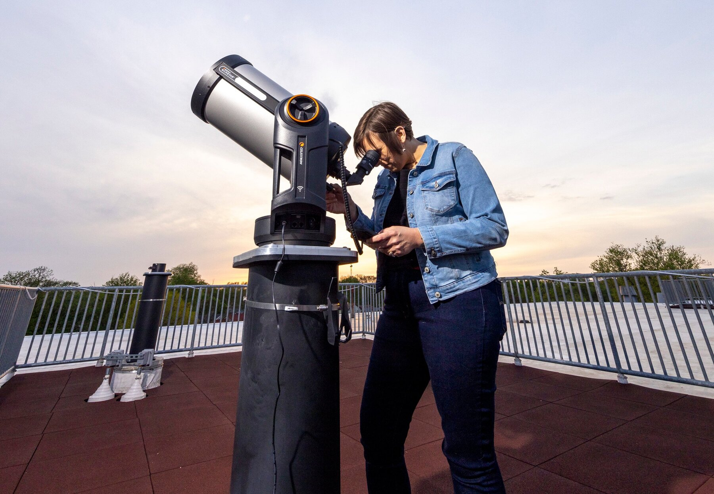

About

I am an associate professor of astronomy at Knox College, where I teach physics and astronomy. My time at Knox College began as an undergraduate from 2002-2006 studying physics and political science. I graduated from Knox College and attended Indiana University in Bloomington, Indiana for my graduate studies. I obtained a Master's degree in Astronomy from Indiana University in 2008 and a PhD in Astronomy from Indiana University in 2013.
I studied at Indiana University with Dr. John Salzer and focused my research on star formation in dwarf irregular galaxies. I remain interested in this research and am particularly interested in understanding how chemical enrichment has taken place over cosmic time in the lowest mass systems.
In addition to studying low-mass star-forming galaxies, I have become increasingly involved in using small telescopes and have expanded my research to involve cataclysmic variables, other variable stars, and globular clusters.
I helped lead the establishment of a new observatory at Knox College in 2020 and now direct the Knox College Observatory, whose main telescope is an impressive 17-inch PlaneWave CDK Telescope on a Software Bisque Mount. This telescope is used not only for student research and classes but also for public outreach. There are frequently events open to the Knox community and also several open to the public.
I additionally served as the institutional lead in establishing Knox's relationship with the MACRO Consortium, an active science collaboration that collectively operates the robotic Robert L. Mutel Telescope, a 20-inch telescope with novel instrumentation in Sonoita, AZ. In June 2026, I became the Director of the MACRO Consortium.
I am also particularly fond of cats.